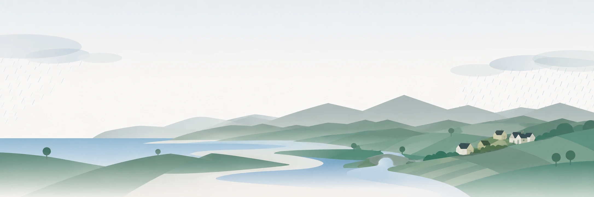

A digital twin of Ireland
Climate change is accelerating glacier and ice-sheet melt, raising sea levels and intensifying heavy rainfall. Ireland’s Atlantic location and extensive coastline make it particularly vulnerable to coastal and inland flooding. DigiÉire aims to develop a digital twin of Ireland, underpinned by AI, to explore how flood risks and adaptation choices could shape wellbeing through to 2100. The research puts AI to work on a public good: placing people’s quality of life at the centre of adaptation planning, and looking beyond economic losses to understand how communities can thrive in a changing climate.
Collaboration
Technical University of Denmark (DTU).
Acknowledgements
For supporting access to the Meta Content Library, the source of the public discourse the wellbeing measurement is built on.
For publishing Ireland’s catalogue of past flood events at floodinfo.ie.
For the computational resources on which the scoring models were trained and the corpus scored — Luxembourg MeluXina (LuxProvide) and the Irish Centre for High-End Computing.
For computational resources.